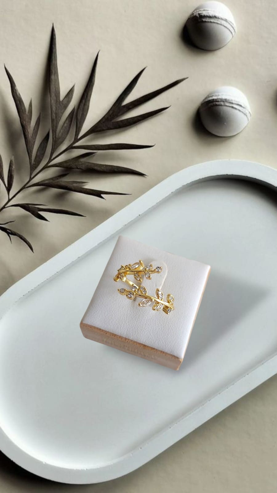

Moda juvenil: ropa, accesorios, perfumes y carteras ✨
Los 5 looks juveniles que marcarán tendencia este verano 2025
Publicado el 20 de agosto de 2025 por Tiendas LALA´S
Este verano la moda juvenil viene cargada de colores vibrantes, jeans anchos y carteras tipo tote. Aqu√≠ te contamos c√≥mo combinarlos para un estilo fresco y moderno. üåû
Perfumes juveniles: fragancias que no pueden faltar
Publicado el 15 de agosto de 2025 por Mariana
Las notas frutales y florales dominan esta temporada. Descubre las fragancias más frescas y juveniles que puedes llevar contigo. üå∏
Cómo elegir los accesorios perfectos
Publicado el 10 de agosto de 2025 por Laura

Un collar llamativo, unas gafas modernas o una cartera juvenil pueden transformar tu look básico en algo espectacular. üíé